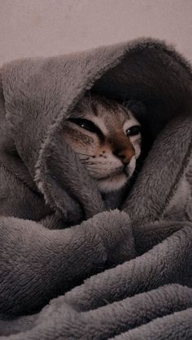
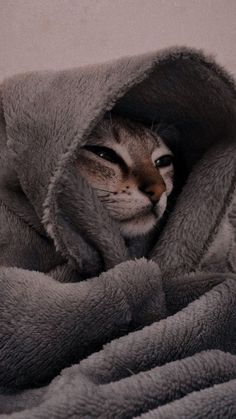

Bienvenidos!
En esta pagina descubriran el fascinante mundo de los gatos. Aquí encontrarás información,
consejos, historias y demas cosas para los felinos de la casa.
Siga recorriendo el sitio con los enlases de acá abajo.

En esta pagina descubriran el fascinante mundo de los gatos. Aquí encontrarás información,
consejos, historias y demas cosas para los felinos de la casa.
Siga recorriendo el sitio con los enlases de acá abajo.
 
